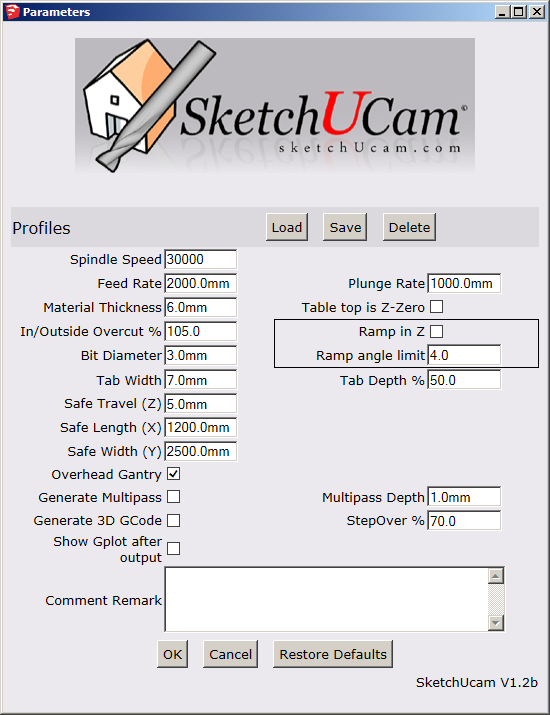

PHLATBOYZ
Feb 2014
Check for Latest Version of the Phlatscript
|
HOWTO:
The PhlatScripT is a set of tools in the form of a plugin for Google
SketchUp. It allows for assigning of CNC cut/fold/drill/mill, etc.
functions to SketchUp designs as a full featured CAM solution. It was
designed for use with the Phlatboyz easy to assemble and learn CNC
machine kits. For more information about these affordable Kits, please
visit
Phlatboyz Machines
Change Gcode plotter Change MyConstants.rb defaults Use the PhlatBones tool Exchange Profiles with friends The vision and direction of the PhlatScripT is Mark and Trish Carew's of Phlatboyz, LLC and is released under GLN licensing terms. Since this code and the ideas behind it is a collaborative effort among many people, it can not be sold in any form. For more information, please contact Mark and Trish Carew through www.phlatboyz.com or kram2422@comcast.net. It has come to fruition through the help of many volunteer programmers, testers, and users. We want to thank everyone for your efforts put forth to make this a reality. The PhlatScripT is an ever changing and evolving program. This is a great project and if you would like to contribute your time and talents to help the Phlatscript grow, please contact us
Since the PhlatScripT is released as open source, anyone and everyone
is welcome to download it and experiment with it. The ultimate goal is
to create a complete and powerful CAM solution directly within SketchUp
capable of outputting 3D tool paths and possibly in the future will be
the ability to not only output the g-code but control the Phlatprinter
as well :) Have fun and please let us know how you are using the
Phlatscript at www.Phlatforum.com
The PhlatScripT or any form of this
code can not be used for commercial gain or sold in any form. This code
is a volunteer collaboration project that consist of the efforts of
many people. We are keeping this truly open source.
Please send questions or comments to Phlatboyz,LLC Phlatboyz or Phlatforum |
| Phlatboyz Command Toolbar | |||
|---|---|---|---|
|

Enter Phlatboyz Parameters to set: [spindle speed, feed rate, plunge rate, safe travel,
material thickness, bit diameter, tab width, tab depth factor, the safe
cutting area size and comment text] which will appear in
the generated g-code. All g-code output uses the safe cutting
area's local origin(the bottom left corner) and only
edges within the safe cutting area will generate g-code. This will
allow designs requiring multiple sheets to be contained within one
SketchUp file and the cut codes processed as one sheet at a time for
separate g-code files for each sheet. The safe area is assumed to be
at sketchup's origin, unless placed elsewhere using the Safe Area Tool. Also, there are 2 check boxes for additional options: 1) "multipass" - for cutting hard materials, where you want to limit the depth of cut by cutting multiple thin layers. 2) "Overhead Gantry". The original 2 Phlatprinters cut from the bottom with a reversed Y axis. Use this option if you have a Phlatprinter3 or your cnc machine has an overhead gantry. This will reverse the direction of the Inside and Outside cuts. Note: When you press "OK", these settings will be saved as attributes to your sketchup model. So each sketchup file will retain their individual settings. Profiles
New in 1.1c is the ability to save and restore tool profiles. This allows you to quickly restore a tool setup that relates to
a type of material or operation. For example one might store the settings for a drilling operation with multipass on, low feed speeds etc.
For a foam milling tool one can store high feed speeds, not multipass and so on.
The 'Delete' button will allow you to select a profile and delete it. For those using the compatibility menu (on Mac or Linux) the profile functions are available on the Tools|Phlatboyz menu. Also on that menu us the Options Summary entry. This will display your current settings for a number of global options settable in the MyConstants.rb file. Yes, we know it is misnamed 'Validity Check', that is a Sketchup default we cannot change :-) Please see the MyConstants.rb help. Some points to note:
|
|||
|
Inside Cut Tool - This tool is used to cut out openings. It is
assigned to a closed loop of edges and requires a corresponding face. The cut path is offset to the inside,
to compensate for the material removed by the cutter. The face will change
to a transparent texture to resemble a hole. It differs from the outside cut
tool in that the path cut direction, will be counter-clockwise. Use the["Shift" key] if the preview shows the inside cut on the wrong side. Just press and hold "Shift" prior to clicking. Use the ["End" key] if the tool locks onto the wrong adjacent face. You won't need this feature, if you hover over faces instead of edges. Note: reversing the face (Edit/Face/Reverse Faces) prior to using the Inside Cut Tool will cause the cut direction to be reversed. In milling, the rotation of the bit, counter clockwise or clockwise, determines which edge of the design will be left rough. Normally, in SketchUp, you would leave the default grey side facing up for all faces, before you assign cut lines. Otherwise, if the face is reversed (white), and a cut line is assigned whether inside or outside, the rough edge will be on the part and not the waste. So, in short, make sure that the grey side is facing up and the PhlatScripT will cut your part file in the right direction leaving a nice clean edge on the part. |
|||
|
Outside Cut Tool - This tool is used to cut the outside contour
of your part. It is assigned to a closed loop of edges and requires a corresponding face.
The cut path is offset to the outside, to compensate for the material removed by the cutter.
The thin face between the original line and the Outside Cut line will get a transparent texture.
It differs from the inside cut tool in that the path cut direction, will be clockwise.
Use the["Shift" key] if the preview shows the outside cut on the wrong side. Just press and hold "Shift" prior to clicking. Use the ["End" key] if the tool locks onto the wrong adjacent face. You won't need this feature, if you hover over faces instead of edges. Note: reversing the face (Edit/Face/Reverse Faces) prior to using the Outside Cut Tool will cause the cut direction to be reversed. This works the same as the Inside Cut Tool. |
|||
|
Tab Tool -
This tool is used to place tabs along any inside or outside cut Phlatboyz edge.
The tabs hold the parts in place while the media (foam sheet, balsa, cardboard, etc.) moves back and forth in the machine.
This tool uses the tab width and tab depth factors which are defined in the Parameters dialog. Use that dialog to define the tab tool parameters prior to using the tool; changing the values in the Parameters dialog will not affect tabs that have already been placed. Use the ["End" key], to toggle from standard Tabs to V-Tabs. V describes the angled tabs vs the standard rectangular tabs. The cursor will change from a T to V to show the current mode. Use the ["Home" key], to toggle Bold Tab viewing mode off/on. When the tab tool is active, this feature makes the tabs easy to see. Turn it off, if sketchup slows down when using the tab tool. Note: A feature of the Tab Tool is the ability to 'draw' tabs to any width you desire always starting with the default width. For example, if the tabs placed along a curve are too small, you can hold the left mouse button down and draw then in wider. The tab depth will remain the same as defined in the parameters dialogue. Note: The tab tool has click/drag functionality, for multiple tabs or extending tab width. |
|||
|
Fold Tool -
This tool is used to define a fold line. The use of a fold line is
to create a crease, so a sheet of foam can be folded or bent to form 3d shapes. Or by using
a series of stepped depth fold lines, create a hinge line for a model airplane control surface.
It automatically selects a single edge. Press the ["Shift" key], if you want all connected edges. Use the ["End" key] to toggle between short and wide mode. When hovering over an edge, the short mode shows a pink color preview. Wide mode shows a darker red/purple preview color. Short and Wide mode status is also shown on the bottom status text. The default short mode will shorten both ends of the edge by a small amount. The main reason is to break contact and stop the possible creation of an extra face and loop, which could confuse the phlatscript. Wide mode will act normally and not offer this protection. But you can use wide mode, if say you want a connected chain of edges. Use the ["Left Arrow"]["Right Arrow"] keys to scroll through the preset depths: [25%, 50%, 75% & 100%]. This will result in the cut depth, as a percentage of the material thickness. You can see the current depth factor in the VCB (lower right hand corner in SketchUp). Use the ["Down" key] to set the depth back to the default of 50%. Note: You can type custom depth values into the VCB, using your keyboard. The value is not accepted, until the "Enter" key is pressed. Then the % suffix will appear with the VCB value, which indicates the value is now set. Max value allowed is 140%. |
|||
|
Plunge Tool -
This tool is used to create a plunge point at any given cursor position. The use of the plunge tool is to drill holes.
The plunge tool creates a circle with a brown radius line extending from the center to the outside diameter. The diameter of the circle is determined by the Phlatboyz "Bit Diameter" parameter. The plunge tool allows the generation of gcode required to plunge the bit at the depth indicated in the "Material Thickness" Parameters dialog. OR You can set the percentage depth before you click. This hole will then be that percentage of the material thickness in depth. You will need to set the depth for every hole. AND You can hold down the SHIFT key when clicking, and you will be prompted for a diameter. The hole will then be spiral bored to that diameter. This is quite slow so holes that are greater than 3 times the diameter of the bit should rather be a circle with an inside cut to remove the waste. Feedrate will be the normal rate set for cuts. Downfeed will be limited to either
|
|||
|
Center line Tool -
This tool is used to define a center line cut on a SketchUp edge.
The common use of center lines, is to cut a shallow graphical design or slot.
If you are able to draw the necessary pattern of lines to form a pocket, you can also use center lines to cut out the pocket. Pocket milling
is when you cut out shallow openings, that doesn't penetrate to the other side.
It automatically selects all connected edges. Press the ["Shift" key], if you only want a single edge. Use the ["Left Arrow"]["Right Arrow"] keys to scroll through the preset depths: [25%, 50%, 75% & 100%]. This will result in the cut depth, as a percentage of the material thickness. You can see the current depth factor in the VCB (lower right hand corner in SketchUp). Use the ["Down" key] to set the depth back to the default of 50%. Note: You can type custom depth values into the VCB, using your keyboard. The value is not accepted, until the "Enter" key is pressed. Then the % suffix will appear with the VCB value, which indicates the value is now set. Max value allowed is 140%. |
|||
|
Pocket Tool - This tool is used to create a pocket inside a shape.
A pocket is a shallow depression in the surface of the part. While this tool will automatically deal with simple shapes, some shapes will produce incorrect results. These can be fixed manually or can be drawn using the keyboard options as follows:
Note: You can type custom depth values into the VCB, using your keyboard. The value is not accepted, until the "Enter" key is pressed. Then the % suffix will appear with the VCB value, which indicates the value is now set. Max value allowed is 99%. |
|||
|
Eraser Tool - With this tool you can erase any Phlatboyz Edge.
Default is to erase all types of Phlatedges. This is the cursor that has no letters next to it. Use the ["Left Arrow"]["Right Arrow"] keys, if you want to erase only one type of edge. It will cycle through and show in the VCB(lower right hand corner of SketchUp) which line type is currently assigned to the eraser. Also, each type has it's own unique cursor. Use the ["Down" key] to quickly go back to the default "erase All types". Tab highlighting has been added to the eraser tool: Use the ["Home" key], to toggle Bold Tab viewing mode off/on. When the eraser tool is active, this feature makes the tabs easy to see. Turn it off, if sketchup slows down when using the eraser tool. Note: The right click context menu will also allow you to erase ALL selected Phlatboyz edges. Tip: Instead of deleting one item at a time, select many or all. Activate the eraser tool. And click the selected items. If any unwanted Phlatboyz edges still remain, then repeat. |
|||
|
Safe Area Tool - Use this to graphically define the safe cutting area
for your parts. This tool uses the safe width and height defined in the
parameters dialog and allows dynamic placement of the "safe" cutting
area rectangle. G-code output will be generated only from designated Phlatboyz edges within this safe rectangle and will be relative to the safe origin (bottom left corner). Note: Even if the user doesn't use this tool to graphically define a safe area, the safe cutting area still exists and assumed to be at sketchup's origin. |
|||
|
Reorder Groups Tool - Redorder groups to change cut order
Grouped cuts will be cut first, in the order they were grouped. However, in order to edit a group it has to be exploded. Grouping it again affects the cut order. To reorder groups select this tool and then simply click on each group in the order you want them cut. |
|||
|
Generate GCode - This tool is the last step in the PhlatScripT process. Once
the parts are surrounded by safe cutting area and all cut lines and
tabs have been assigned, click on this icon to open a file save
dialogue box to save your g-code file to the location you specify. The Phlatscript will calculate the optimal cut order. Or you can choose your own cut order. You do this by grouping your parts and they will be cut in the same order. Note: The output g-code file has the extension .cnc but is simply a text file of X, Y, Z coordinates for the Phlatboyz machine to follow. Depending on your control software, this extension can be renamed to anything desired. To edit the g-code file, you can right click and open with a text editor of your choice. |
|||

|
Link to the Phlatboyz homepage. | ||
| Opens this help file. | |||
 Clicking the 'Load' button will bring up a prompt box showing the currently available profiles.
Select one and click 'Ok'.
Clicking the 'Load' button will bring up a prompt box showing the currently available profiles.
Select one and click 'Ok'.{kind=link}
| Phlatboyz Edge Context Menu | |
|---|---|
| These menu items appear in the "Phlat Edge" sub menu when right clicking on any edge. | |
| Inside Edge | Selecting this command will mark selected edges as Phlatboyz Inside edge. No other change will be made to the edge. This allows you to select individual edges in SketchUp and create Phlatboyz cut edges from them. |
| Outside Edge | Selecting this command will mark selected edges as Phlatboyz Outside edges. This allows you to select individual edges in SketchUp and create Phlatboyz cut edges from them. No other change will be made to the edge. |
| Erase Selected Phlat Edges |
This command will clear all selected edges that are currently marked as Phlatboyz edges.
Note: The original design edges will remain but the original Phlatboyz edges will be deleted. |
| Phlatten Selected Edges | This command will set all selected parts to 0 on the Z plane. This is a great tool for laying parts out in the safe cutting area before assigning cuts to them. A great feature of this tool is that it ensures that the part is perfectly flat and that the proper face (default blue) is facing upward. |